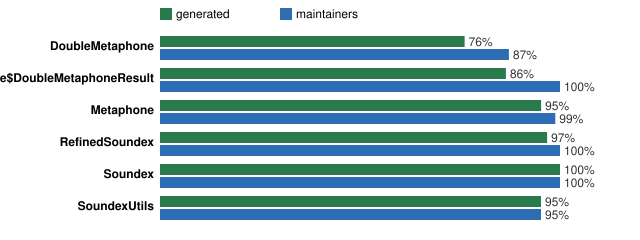

Characterization tests for Apache Commons Codec 1.3 language (2004).
Generated tests pin what the code does today. The maintainers' JUnit 3 suite is the comparison.


Generated tests run against Commons Codec 1.5: 0 failures, 20 errors of 0.
Held cases: review-queue.md